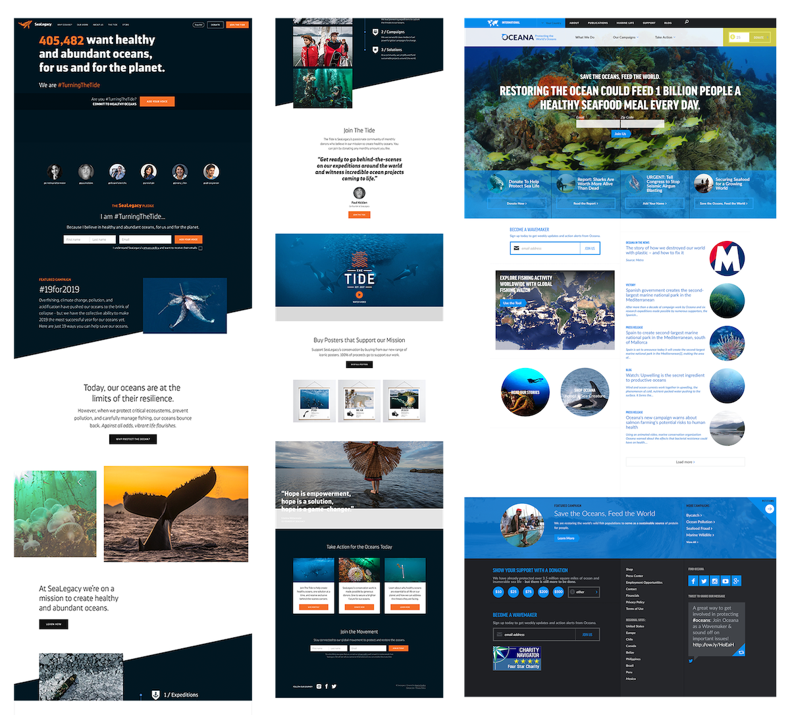
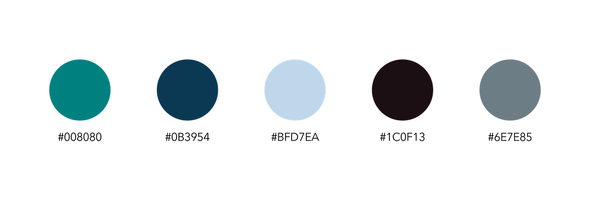
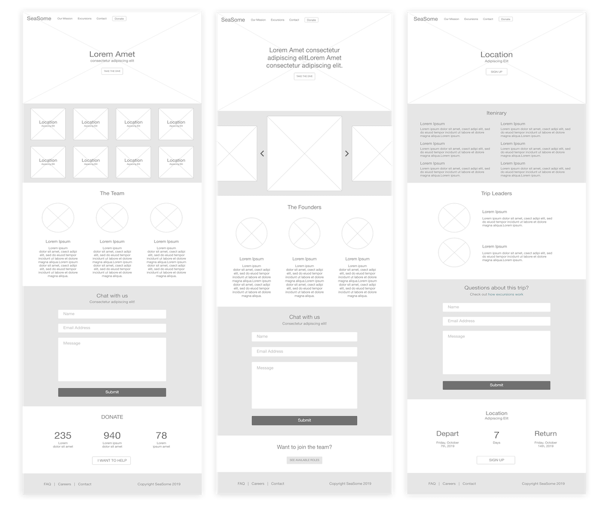
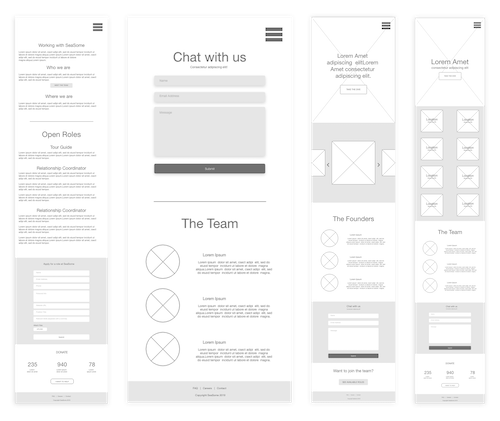
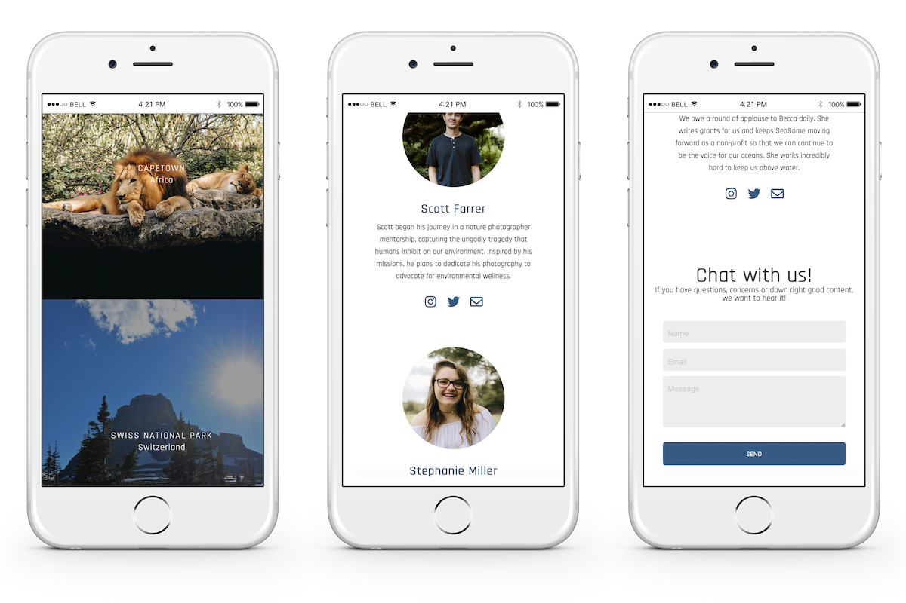

About
SeaSome's primary mission is to advocate for cleaner shores
and more sustainable living. Within this realm, users can
donate to SeaSome or attend excursions that last about 4 days
in extraordinary locations. The excursions are geared towards
photographers and their company. These opportunities allow for
a like-minded community to come together and see how beautiful
the world is, why it is worth saving and to capture its
enchantment.
My Roles
UX Researcher
Information Architect
UX Designer
Front-End Developer
Research
We were fortunate to have wonderful examples before us on the
current web.
Sea Legacy
and
Oceana are
only two of the many ocean-advocating organizations
maintaining sites with exceptional user experiences. SeaSome's
wireframes and palette were inspired from these sites. The
market gap of non-profit photography excursions towards
conservation was crystal clear. This allowed us to create an
atmosphere free of competition and expressive of the true
cause that SeaSome lives for.

Current Oceanic web presences on market.
Key Findings
These features were integral to the design of SeaSome's
site.
-
Imagery. On the topic of environmental
beauty, images capturing that allure are important;
especially when catering to photographers. SeaSome site
images are provided by
Ray Waag Photography.
-
Persistent Donation opportunities. Giving
the user a chance to donate on every page proved to be an
effective, non-obtrusive way to address the importance and
impact of every single donation that is received. The footer
and navigation contain "Donate" options as well as its
exclusive page.
-
Credibility. Express not only SeaSome's
mission, but address the facts of why it is important - why
we should care. We used only the space we needed to
display data to convey this message.
-
Volunteer & Open Positions. While there may
not always be open positions on the SeaSome team, volunteers
should always be welcome. This helps involve the users and
welcome them into the world of saving the oceans with
SeaSome.
The Design
The palette of SeaSome is of course, hues of blue. Commonly
found on similar sites, the blue representing the ocean was a
no-brainer. Rather than going the route of Sea Legacy and
accenting it with it's complimentary color of orange, we found
that keeping consistent blues and black commended the site's
many images very well.

Web wireframes

Mobile wireframes

User Testing
Upon user testing and research we found the following features
needed to be implemented to encourage visitors and help them
complete their tasks with an optimal experience. Since SeaSome
is fully virtual, this experience is vital to keeping and
gaining a valuable audience.
-
Imagery. On the topic of environmental
beauty, images capturing that allure are important;
especially when catering to photographers. SeaSome site
images are provided by
Ray Waag Photography.
-
Persistent Donation opportunities. Giving
the user a chance to donate on every page proved to be an
effective, non-obtrusive way to address the importance and
impact of every single donation that is received. The footer
and navigation contain "Donate" options as well as its
exclusive page.
-
Credibility. Express not only SeaSome's
mission, but address the facts of why it is important - why
we should care.
-
Volunteer & Open Positions. While there may
not always be open positions on the SeaSome team, volunteers
should always be welcome. This helps involve the users and
welcome them into the world of saving the oceans with
SeaSome.
-
Informational. Have you ever visited a site
that was so chic and modern that you had no
idea what was going on? You're not alone. Having an
explanatory, visual atmosphere can avoid the extremely
progressive over-design of some sites. Again, outside of
expeditions, SeaSome customer relationships are all virtual.
This lends weight on ensuring users can complete their tasks
and gather information they need from the site alone.
Hi-Fidelity Design to Development
Being the designer and developer, building mobile variants
came smoothly as I established the breakpoints. In common
cases where I would be handing off the designs to another
developer, I design mobile, web and sometimes tablet views.
In summary, it was a very engaging and educational experience
as I pulled beautiful scenery, oceanic advocacy, marketing
strategy and virtual experiences into one set scene.
